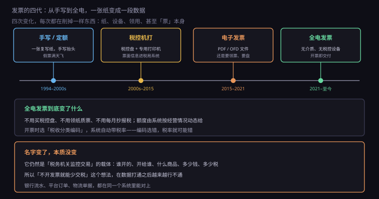
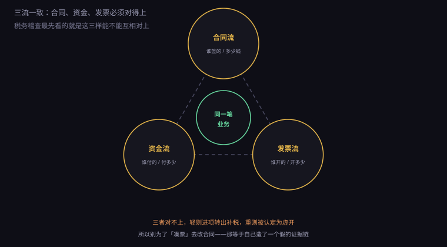

约 0.31 万字 · 3 张图 · 它不是收据，是一张能被税务局读懂的凭证
收据只能证明"我收了你的钱"。发票能证明的事多得多。
第一，它是记账凭证。 企业做账要有依据，发票就是最硬的那张。 没有发票的支出，会计上可以记，但税务上不认， 不能在企业所得税前扣除。
第二，它是抵扣凭证。 专票上那个税额，买方可以拿去抵自己的销项。 这是真金白银，所以企业对专票的执着远超你的想象。
第三，它是监控工具。 这一点最容易被忽略。发票是税务局了解每一笔交易的主要渠道： 谁开的、开给谁、什么商品、多少钱。 全国发票数据汇总起来，就是一张实时更新的经济地图。
所以发票的管理逻辑，本质上是"用票据控制税源"。 这也是为什么它长得那么像一张表格—— 它的每个格子都对应一个要被抓取的字段。
日常会遇到四种，用途完全不同。
增值税专用发票：能抵扣，票面把金额和税额分开列。 只有一般纳税人能抵。开给个人没有意义（个人不抵扣）。
增值税普通发票：不能抵扣，但能作为成本入账。 开给个人、开给小规模纳税人，用这个。
电子发票：以前指 PDF/OFD 格式的票， 需要领用、需要税控设备，只是把纸换成了文件。
全电发票（全面数字化的电子发票，也叫"数电票"）： 2021 年广东试点，2024 年 12 月全国推行。 它没有介质、不需要税控设备、不需要领用， 开出来就是一段带签名的数据。
现在新办企业基本直接进入全电时代， 很多人可能一次都没见过纸质发票。
发票的历史，就是一部"不断削掉中间环节"的历史。

第一代，手写。 复写纸垫三层，手写抬头、金额。假票泛滥， 因为手写的东西没法校验。
第二代，税控机打。 要买税控盘、专用打印机，开票时数据同步到税局系统。 这一代解决了"票面数据进系统"的问题， 但设备贵、维护烦、每月要抄报税。
第三代，电子发票。 票变成 PDF/OFD 文件，可以邮件发送。 但底层还是那套税控体系，还是要领票、要盘、要抄报。
第四代，全电发票。 这一次动的是底层： 没有税控设备，没有领用环节，没有抄报税； 开票额度由系统根据你的经营情况动态给（叫"授信额度"）； 开出来直接进对方的税务数字账户，不需要"交付"这个动作。
对使用者来说，最大的变化是门槛降到几乎为零： 登录电子税务局，填几项，点开票，就完了。 不用买盘、不用装机、不用找服务商。
但对监管来说，变化更大： 每一张票从开出到入账，全在系统里闭环。 以前那种"开两张、只报一张"的操作，空间被压到极小。
发票长什么样，其实就是它的数据模型。
上半部分：购买方信息、商品或服务名称、数量单价金额、税率税额。 专票要求购买方四项齐全（名称、税号、地址电话、开户行账号）， 普票一般只要名称和税号。
下半部分是四种最常见的错误，每一种都会让这张票废掉：
抬头写错：对方拿去抵扣时系统比对不上，
只能红冲重开。
税号错一位：系统直接校验不通过，连提交都过不了。
商品编码选错：税率跟着错，还可能触发风控预警。
金额和合同不符：三流不一致，稽查时第一个被挑出来。
这四条里，最隐蔽的是第三条。因为它不会立刻报错， 可能几个月后才在比对时被发现，那时候已经跨期了。
开票时有一个必填项叫"税收分类编码"， 它挂在商品名称后面，决定这张票适用什么税率。
编码是一套国家统一的分类体系，几千个条目， 按行业和商品性质编排。你输入"技术服务费"， 系统会让你从几个相近的编码里选： 信息技术服务、研发和技术服务、鉴证咨询服务……
选错会怎样？
轻的，税率错。 选了 13% 的货物编码去开技术服务，税就多交了； 反过来选了 6% 去开货物，就是少交税，属于申报不实。
重的，触发预警。 税务系统会做行业比对：一家软件公司大量开"建筑材料"， 或者一家咨询公司开"钢材"，系统立刻标记异常。 这叫"编码与经营范围不符"。
所以开票时不要图省事随便选一个。 第一次开某类业务，问一句会计"这个业务用哪个编码"， 后面就能一直用。
还有一个细节：编码会决定你的行业归属。 长期大量开某一类编码，税务系统可能把你归到那个行业去， 影响你的行业税负率指标。所以主营是什么，就该主要开什么编码。
发票开错不能撕掉重开（电子发票更没有"撕"这个动作）， 只能走红字发票流程，业内叫"红冲"。
做法是：开一张金额为负数的发票，把原来那张抵掉， 然后重新开正确的。
流程上有个关键区别：
如果对方还没抵扣，你自己在系统里发起红冲就行。
如果对方已经抵扣了，必须由对方确认（在系统里点"确认"），
你才能开红字票。
这一条经常造成扯皮：客户已经拿票入账了，你说开错了要重开， 它得先做进项转出、再确认红冲，多一道手续，很多人不愿意配合。
所以最好的办法是开票前核对三遍： 抬头、税号、金额。这三样对了，90% 的红冲都能避免。
还有时间限制：跨月的发票红冲要走"红字信息表"流程， 比当月作废麻烦得多。所以发现错了要尽快处理， 别拖到下个月。
这是税务稽查最核心的一条判断标准。

合同流：A 和 B 签了合同，金额 10 万。
资金流：A 付给 B 10 万，走对公账户。
发票流：B 开给 A 10 万的发票。
三样必须指向同一件事、同一对主体、同一个金额。 任何一处对不上，都会被问"这笔业务是真的吗"。
常见的对不上有几种：
合同是 A 签的，钱是 C 付的（"我老板让子公司付"）——
发票开给 A，货发给 D（"帮忙发到分公司"）——
合同 10 万，发票开 12 万（"多开点，你懂的"）。
前两种在现实中有合理解释，但必须补书面说明 （委托付款协议、发货指令），否则稽查时说不清。 第三种没有解释，那就是虚开。
所以有句话要记住：不要为了"凑票"去改合同。 改了合同，等于自己伪造了一条假的证据链， 性质从"操作不规范"变成了"故意"。
在讲虚开之前，先说一个更容易遇到的场景： 客户说"帮个忙，多开两万"。
这句话听起来像人情，法律上是让你虚开。 多开的部分没有真实交易，属于"开具与实际经营业务不符的发票"， 不管你有没有收好处费，都构成虚开。
而且风险是双向的：它多抵了税，你要多交税， 两边都在系统里留了痕。将来任何一方被查，另一方的票一定会被翻出来。
怎么拒绝又不伤和气？给一个不涉及对错的理由就行： "我们开票系统是按合同金额授信的，多开要改合同， 改合同又要走法务，太麻烦了。" 把问题推给流程，比讲法律更容易被接受。
还有一个反向的误区："不开发票就不用申报"。 不对。增值税的纳税义务发生时间是"收到货款或者开具发票"， 只要你收了钱，不管开没开票，都要申报"未开票收入"。 用个人微信收货款、不入公账、不开票， 以为这样查不到——现在平台流水、银行流水、物流单据都在系统里， 税务要做的是比对，不是取证。
说完这个场景，回到正题：为什么虚开的刑罚这么重。
虚开增值税专用发票，写在《刑法》第二百零五条， 最高可以判无期徒刑。
为什么这么重？因为它偷的不是"一点税"，是国库的钱。
一张虚开的专票，买方拿去抵扣，等于直接从国库领走一笔钱。 开票方收"开票费"（常见 3% 到 8% 的票面金额）， 买方省下 13% 或 6% 的税，双方分赃，国库买单。
虚开有三种典型形态：
无货虚开：根本没有交易，纯开票卖票。
这是最典型的，也最容易查——没有物流、没有资金流、
甚至开票方是个空壳。
有货虚开：有真实交易，但金额开大了，
或者开成了别的品名。
对开、环开：A 开给 B，B 又开给 A，
金额相近，互相抵掉。目的是刷业绩或者套取地方补贴。
这三种现在都很难藏。原因很简单：数据打通了。
发票数据、银行流水、社保人数、工商登记、海关报关、平台订单， 现在都在一个体系里能对上。 一家三个人、零社保的公司，一年开几千万的票， 系统第一眼就看见了。
所以那句老话在今天格外成立： 不要买发票，也不要帮人开票。 买票的后果是进项转出、补税、罚款，金额大的追刑责； 帮人开票（哪怕只收一点"手续费"）可能直接构成虚开共犯。
这条线，比大多数人以为的要近得多。